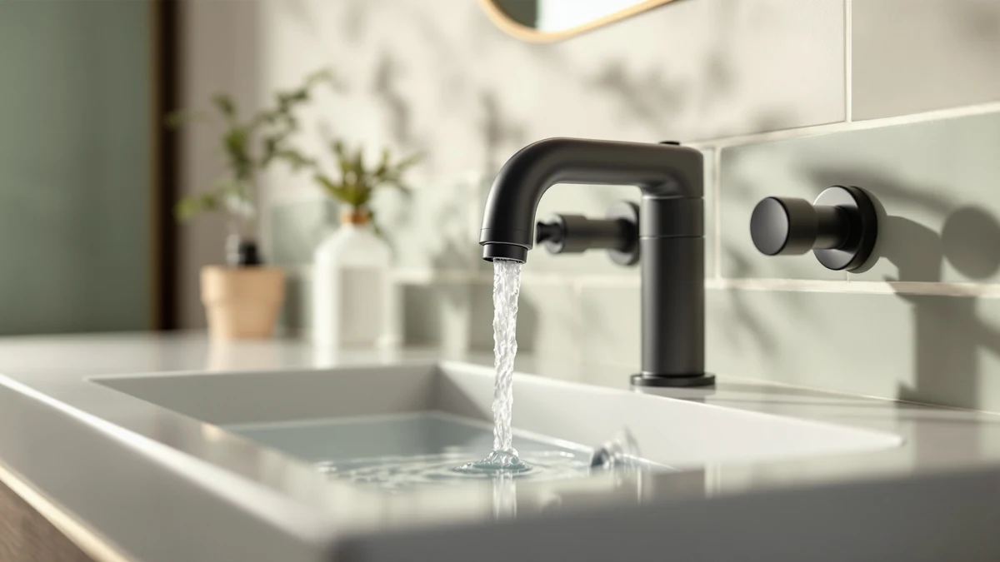

How to Replace a Bathroom Faucet Aerator: Step-by-Step (2026)
Prices and picks verified as of August 2026. Independent, reader-supported reviews.


Things to Know Before You Buy
- Check the thread size before you replace a faucet aerator. Most bathroom faucets use a 15/16-inch (24mm) male or female thread, but a few use M22, so measure before you order a replacement.
- You rarely need to shut off the water. The aerator sits at the tip of the spout, so you only handle a few ounces of standing water when you unscrew it.
- Mineral buildup is the usual culprit. A clogged aerator, not a hidden plumbing problem, is behind most weak-stream complaints in bathrooms with hard water.
- A rag prevents scratches. Wrap the jaws of a wrench or pliers in cloth or tape to protect a chrome, nickel, or matte black finish while you work.
- Replacement aerators cost under $10. A multi-pack like the SIMAX or BOETOADG sets covers more than one sink for less than a single plumber visit.
Knowing how to replace a faucet aerator saves you a service call and about $10 in parts, and you can finish the swap in under fifteen minutes with a wrench you probably already own.
A weak, sputtering, or mineral-clogged stream at your bathroom sink almost always traces back to the small mesh screen threaded into the tip of the spout, not a hidden plumbing issue. Below, we walk through the exact tools, parts, and order of steps so you get consistent water flow back on the first try.
What You'll Need
- Supplies: a replacement faucet aerator sized for your spout, plumber's tape, and an old rag or towel
- Tools: an adjustable wrench or slip-joint pliers, plus tape to protect the finish while you replace the faucet aerator
Step 1: Confirm Your Aerator's Thread Size and Type
Before you replace a faucet aerator, look at where the spout meets the aerator. If the threads sit on the outside of the spout opening, you need a female-thread aerator. If the threads sit recessed inside the spout, you need a male-thread version instead. Most bathroom sink faucets built in the last twenty years use a standard 15/16-inch, 24mm thread, though some use the slightly smaller M22 size.
If you are not sure which one you have, try a simple trick: measure the outer diameter of the aerator housing with a tape measure or caliper. Anything close to 24mm across is the standard size that fits aerators like the SIMAX or BOETOADG sets below. When you shop online, look for a listing that states both the thread type and the size in millimeters or inches, and buy a multi-pack so you have a spare on hand the next time flow drops off.
Step 2: Remove the Old Aerator
Wrap a strip of painter's tape or a folded rag around the aerator housing to protect the faucet's finish, then try turning it counterclockwise by hand first, the standard first move whether you are replacing a faucet aerator for the first time or the fifth.
If it will not budge, clamp an adjustable wrench or slip-joint pliers over the padded housing and turn gently. Mineral deposits can fuse the threads over time, so apply steady pressure rather than a hard yank, which can crack the plastic housing or strip the threads on the spout. Once it turns, unscrew it the rest of the way by hand and set the parts aside. You will usually find two or three pieces stacked inside: the housing, a mesh screen, and a rubber washer.
Step 3: Clean the Faucet Spout Threads
With the old aerator out, look inside the spout opening for the white or greenish crust that hard water leaves behind. Scrub the threads with an old toothbrush or a cloth dipped in white vinegar, which dissolves mineral scale without damaging the finish.
Rinse any loose grit out of the opening so it does not end up trapped behind the new screen. This step matters more than it looks: threading a new aerator onto scaled-up threads is the most common reason a fresh part still leaks or spins loosely within a few weeks of replacing a faucet aerator.
Step 4: Install the New Aerator
Drop the rubber washer into the new aerator housing, then thread the unit into the spout clockwise by hand. Turning it by hand first lets you feel whether the threads are catching correctly before you add any force.
Once it is hand-tight, give it a quarter turn with a padded wrench or pliers, no more. Overtightening cracks plastic housings and squeezes the washer out of shape, a common cause of a slow drip right after you install a new aerator. Getting this seating right is the difference between a faucet aerator replacement that lasts a year and one that leaks within a week.
Step 5: Turn On the Water and Check for Leaks
Turn the faucet on to full flow and let it run for about a minute. Watch the seam between the aerator and the spout for drips, and check that the water leaves the tap in an even, aerated stream rather than shooting out in a single jet or splashing sideways.
If you see a drip at the seam, turn the water off and give the aerator another quarter turn. If the spray still looks uneven after that, the washer may be missing or pinched, so pull the aerator back out and reseat it. Once the flow runs clean and even, you have finished replacing your faucet aerator, and the sputtering or weak stream should be gone.
Common Mistakes to Avoid
The most common mistake when you replace a faucet aerator is skipping the thread check and ordering the wrong size. A female-thread aerator will not seat on a male-thread spout no matter how hard you turn it, so measure first and save yourself a return shipment.
Overtightening ranks second. A wrench makes it easy to keep cranking past the point where the seal has already formed, and that extra force cracks plastic aerator housings or squeezes washers out of shape. Hand-tight plus a quarter turn with pliers is enough for nearly every bathroom faucet.
Reusing an old, torn washer is another mistake to avoid. Washers cost pennies, and most replacement aerators ship with a new one, so skip the temptation to reuse a cracked or flattened washer when a fresh one is already in the box. A bad washer is the single most common reason a newly installed aerator still drips at the base.
Finally, do not ignore what the old aerator tells you. If you pull out a screen packed solid with white or green mineral scale, your water is hard, and a new aerator alone will clog again within months unless you also address water hardness with a filter or softener. Treat this fix as a solution for flow, not a permanent cure for hard water.
Our Top Picks
If you are ready to replace a faucet aerator today, these three multi-packs cover the standard 15/16-inch thread size most bathroom sinks use, based on our comparison of materials, thread compatibility, and price per unit.

Editor’s Pick
4Pcs Bathroom Faucet Aerator Replacement
A solid-brass housing and stainless mesh screen make this four-pack a durable, corrosion-resistant choice for the standard 24mm thread, and the price per aerator undercuts most single-unit listings.
$6.99
Check Price on Amazon
Best Value
BOETOADG 4PCS Faucet Aerator 2
This two-pack of chrome-plated brass aerators includes gaskets for both units, a fair swap for the SIMAX pick if you only need to cover two faucets rather than four.
$6.99
Check Price on Amazon
Premium Choice
SHAP+ Faucet Aerator Flow Restrictor
The twelve-pack fits both internal M22 and external M24 threads, so it is the pick to reach for if you are not certain which thread type your faucet uses or you are stocking spares for multiple bathrooms.
$7.98
Check Price on AmazonHow do I know what size aerator my faucet needs?
Most bathroom faucets use a 15/16-inch, 24mm thread, either male or female depending on where the threads sit on your spout.
Do I need to turn off the water to replace a faucet aerator?
No.
Frequently Asked Questions
How do I know what size aerator my faucet needs?
Do I need to turn off the water to replace a faucet aerator?
Why does my new aerator still leak?
How often should you replace a bathroom faucet aerator?
Can you replace a faucet aerator without a wrench?
Verdict
Once you have replaced a faucet aerator, the fix should hold for a year or more unless your water is especially hard. The job comes down to three things: matching the thread size, clearing mineral buildup off the threads, and not overtightening the new part. Skip any one of those and you will be back here within weeks instead of months.
For most bathroom sinks, the SIMAX four-pack covers the job with a brass housing that resists corrosion better than the stamped-metal aerators bundled with cheap faucets. If you only need to cover a single sink, the BOETOADG two-pack costs the same and includes fresh gaskets for both units. And if you are not sure which thread type you have, the SHAP+ twelve-pack fits both internal and external threads, so you will not have to double back for a second order.
Whichever pack you choose, the fifteen minutes you spend now buys back the clean, even flow your faucet had on day one.